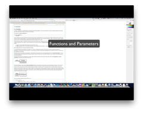
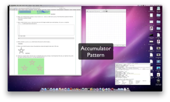
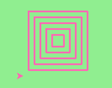

Funções¶
Funções¶
Em Python, uma função é uma sequência de comandos que executa alguma tarefa e que tem um nome. A sua principal finalidade é nos ajudar a organizar programas em pedaços que correspondam a como imaginamos uma solução do problema.
A sintaxe de uma definição de função é:
def NOME( PARÂMETROS ):
COMANDOS
Você pode inventar qualquer nome para as funções que você cria, exceto que você não pode usar um nome que é uma palavra reservada em Python, e que os nomes devem seguir a regra de identificadores permitidos. Os parâmetros especificam qual informação, se alguma, você deve providenciar para que a função possa ser usada. Outra forma de dizer isto é que os parâmetros especificam o que a função necessita para executar a sua tarefa.
Pode existir qualquer número de comandos em uma função, mas eles tem
que ter a mesma tabulação a partir do def. Nos exemplos neste livro,
usaremos a tabulação padrão de quatro espaços. Definição de função
é a segunda de vários comandos compostos que veremos, todos eles
tendo o mesmo padrão:
- Uma linha de cabeçalho começando com uma palavra reservada e terminando com dois pontos.
- Um corpo consistindo de um ou mais comandos, cada um deles com a mesma tabulação – 4 espaços é o padrão em Python – em relação à linha de cabeçalho.
Já vimos o comando for que segue o mesmo padrão.
Na definição de uma função, a palavra reservada no cabeçalho é
def, que é seguida pelo nome da função e alguns parâmetros entre
parênteses. A lista de parâmetros pode ser vazia ou conter qualquer
número de parâmetros separados pos vírgulas. Em qualquer caso, os
parênteses são obrigatórios.
Precisamos falar um pouco mais sobre parâmetros. Na definição, a lista de parâmetros é conhecida mais especificamente como os parâmetros formais. Esta lista de nomes descrevem o que a função precisará receber do usuário da função. Quando você usa uma função, você fornece valores aos parâmetros formais.
A figura abaixo mostra essa relação. A função precisa de certas informações para poder executar a sua tarefa. Esses valores, frequentemente chamados de argumentos ou parâmetros reais, são passados à função pelo usuário.
Este tipo de diagrama é frequentemente chamado de diagrama de caixa-preta porque ele somente mostra os requisitos do ponto de vista do usuário. O usuário precisa saber o nome da função e quais argumentos precisam ser passados. Os detalhes de como a função funciona estão escondidos dentro da “caixa-preta”.
Suponha que estamos trabalhando com tartarugas e uma operação comum que precisamos é desenhar quadrados. Faria sentido se nós não precisássemos duplicar todos os passos cada vez que precisarmos fazer um quadrado. “Desenhe um quadrado” pode ser pensado como uma abstração de um número de passos menores. Precisaremos passar duas informações para a função executar a sua tarefa: a tartaruga para fazer o desenho e o tamanho do lado do quadrado. Poderíamos representar isto usando o seguinte diagrama de caixa-preta.

Abaixo segue a função que captura essa ideia. Teste-a.
(ch04_1)
O nome desta função é desenhaQuadrado. Ela tem dois
parâmetros — um para dizer à função qual tartaruga mover e o outro
para dizer o tamanho do quadrado que desejamos desenhar. Na definição
da função eles são chamados t e tam respectivamente. Se
certifique que você sabe onde o corpo da função termina — depende da
tabulação e as linhas em branco não valem para esta finalidade.
docstrings
Se a primeira coisa depois do cabeçalho da função é um string (algumas ferramentas insistem em que isto precisa ser um string dentro de três aspas), ele é chamado de docstring e tem tratamento especial em Python e em algumas ferramentas de programação.
Outra forma de recuperar esta informação é usar o interpretador
interativo e digitar <nome_da_função>.__doc__, que recuperará o
docstring da função. Portanto, o string que você escreve como
documentação no início da função é recuperável online pelas
ferramentas do Python. Isto é diferente dos comentários no seu
código, que são completamente eliminados quando o programa é
analisado pelo interpretador.
Por convenção, programadores em Python usam docstrings para documentar propriedades importantes de suas funções.
Definindo uma nova função não a faz rodar. Para tanto, precisamos
fazer uma chamada de função. Isto é também conhecido como uma
invocação de função. Já vimos como chamar algumas funções
nativas como print, range e int. Chamadas de
função contém o nome da função a ser executada seguida por uma lista
de valores, chamados argumentos, os quais são atribuídos aos
parâmetros da definição da função. Logo, na penúltima linha do
programa, chamamos a função e passamos alex como a tartaruga a ser
manipulada, e 50 como o tamanho do quadrado que queremos.
Uma vez definida uma função, podemos chamá-la quantas vezes quisermos
e seus comandos serão executados cada vez que a chamamos. Neste caso,
poderíamos usá-la para que uma de nossas tartarugas desenhe um
quadrado e então podemos mover a tartaruga e fazê-la desenhar um
quadrado diferente num local diferente. Note que levantamos a cauda de
forma que quando alex se move não há rastro. Abaixamos a cauda
antes de desenhar o próximo quadrado.
(ch04_1a)
No próximo exemplo, mudamos um pouco a função desenhaQuadrado
e fazemos que tess desenhe 15 quadrados com algumas variações. Uma
vez que a função esteja definida, a chamamos quantas vezes quisermos com
quais parâmetros quisermos.
(ch04_2)
Rascunho
Teste seu entendimento
5.1.1: O que é uma função em Python?
5.1.2: Qual é uma das finalidades principais de uma função?
5.1.3: Qual dos seguintes é um cabeçalho válido de uma função (a primeira linha da definição da função)?
5.1.4: Qual é o nome da seguinte função?
def desenhaQuadrado(t, tam):
"""Faca a tartaruga t desenhar um quadrado com lado tam."""
for i in range(4):
t.forward(tam)
t.left(90)
5.1.5: Quais são os parâmetros da seguinte função?
def desenhaQuadrado(t, tam):
"""Faca a tartaruga t desenhar um quadrado com lado tam."""
for i in range(4):
t.forward(tam)
t.left(90)
5.1.6: Considerando a função abaixo, quais dos comandos seguintes chama a função corretamente (i.e., causa a execução da função)? Assuma que já definimos uma tartaruga de nome alex.
def desenhaQuadrado(t, tam):
"""Faca a tartaruga t desenhar um quadrado com lado tam."""
for i in range(4):
t.forward(tam)
t.left(90)
5.1.7: Verdadeiro ou Falso: Uma função pode ser chamada várias vezes colocando-se uma chamada para a função no corpo de um laço.
Funções que retornam valores¶
A maioria das funções requerem argumentos, valores que controlam como a função faz seu serviço. Por exemplo, se você quer encontrar o valor absoluto de um número, você tem que indicar qual é o valor do número. Python tem um função nativa para computar o valor absoluto:
(ch04_4)
Neste exemplo, os argumentos da função abs são 5 e -5.
Algumas funções são definidas com mais do que um argumento. Por
exemplo, o módulo matemático contém uma função chamada
pow que usa dois argumentos, a base e o expoente.
(ch04_5)
Note
Note que já vimos que elevar uma base a um expoente pode ser feito com o operador ** .
Outra função nativa que requer mais do que um argumento é a função max.
(ch04_6)
max pode receber qualquer número de argumentos, separados por
vírgulas e retornará o maior valor recebido. Os argumentos podem ser ou
valores simples ou expressões. No último exemplo, 503 é retornado, uma
vez que ele é maior do que 33, 125 e 1. Note que max também
funciona com listas de valores.
Ademais, todas as funções como range, int, abs retornam
valores que podem ser usados para construir expressões mais complexas.
Logo, uma diferença importante entre estas funções e uma como
desenhaQuadrado é que desenhaQuadrado não foi executada porque
queríamos que ela computasse um valor — ao contrário, escrevemos
desenhaQuadrado porque queríamos que ela executasse uma sequência
de passos que causassem à tartaruga desenhar um forma específica.
Funções que retornam valores são chamadas algumas vezes de funções frutíferas. Em muitas outras linguagens, uma função que não retorna um valor é chamado de procedimento. Mas ficaremos aqui com o jeito do Python e também chamaremos isso de função, ou quando quisermos enfatizar essa propriedade de não retornar valores, chamaremos a função de não-frutífera.
Funções frutíferas ainda permitem ao usuário fornecer informação (argumentos). Entretanto, existe agora um dado adicional que é retornado da função.

Como escrever funções futíferas? Vamos começar com uma função
matemática bem simples, a função quadrado. A função quadrado terá
um número como parâmetro e retornará o resultado desse número ao
quadrado. Segue abaixo um diagrama do código Python seguinte.

(ch04_quadrado)
O comando return é seguido de uma expressão que é calculada. Seu
valor é retornado a quem chama a função como o fruto da chamada da
função. Como o comando return pode conter qualquer expressão,
podemos evitar de criar a variável temporária y e
simplesmente usar return x*x.
Tente modificar a função quadrado acima para ver se funciona
da mesma forma. Por outro lado, usando variáveis temporárias como y, o
programa acima permite que se encontrem erros mais facilmente. Estas
variáveis temporárias são chamadas de variáveis locais.
Observe algo importante aqui. O nome da variável que passamos como um
argumento — aQuadrar — não tem nada a ver com o nome do
parâmetro formal — x. É como se x = aQuadrar fosse executado
quando quadrado é chamado.
Não interessa qual o nome da variável que armazenou o valor com o qual a função é chamada. Em
quadrado, o nome da viarável é x. Você pode ver isto
claramente no codelens, onde as variáveis globais e variáveis locais
para a função quadrado aparecem em lugares separados.
Na medida em que você simula passo-a-passo o exemplo no codelens, note que o comando return não apenas causa a função retornar o valor, mas também retorna o fluxo de execução de volta ao local do programa onde a função foi chamada.
(ch04_clquadrado)
Outra coisa importante para observar quando você simula os passos no codelens, é o destaque dos números das linhas. O codelens coloca uma flecha apontando para o número da linha que está sendo executada. Quando você começa o codelens você pode notar a flecha que aponta para a linha 1. A próxima linha a ser apontada é a linha 5. Por que isto? Porque a definição de uma função não é o mesmo que a execução da função. Linhas 2 e 3 não serão apontadas até que a função seja chamada na linha 6.
Nomes curtos de variáveis são mais econômicos e às vezes facilita a leitura do código: E = mc2 não seria tão memorável se Einstein tivesse usado nomes de variáveis mais compridos! Se você prefere nomes curtos, se certifique de colocar alguns comentários para esclarecer o leitor sobre o papel de cada variável.
Todas as funções em Python retornam None, a menos que
explicitamente exista um comando return com um valor diferente de None.
Considere o seguinte erro comum feito por programadores iniciantes.
Na medida que você faz o passo-a-passo, preste bem atenção no que é
impresso quando a função retorna.
(ch04_clquadrado_ruim)
Rascunho
Teste seu entendimento
5.2.1: O que está errado com a seguinte definição de função:
def somaEm(x, y, z):
return x+y+z
print('a resposta é', x+y+z)
5.2.2: O que a seguinte função retorna?
def somaEm(x, y, z):
print(x+y+z)
Variáveis e parâmetros são locais¶
Um comando de atribuição em uma função cria uma variável local
para a variável à esquerda do =. Esta variável existe somente dentro
da função e não pode ser usada fora dela. Por exemplo, considere
novamente a função quadrado:
(local_ruim)
Quando você pressionar o botão ‘last >>’, você verá uma mensagem de
erro. Quando tentamos usar y na linha 6 (fora da função), Python
procura uma variável global chamada y mas não a encontra. Isto
resulta no erro: NameError: name 'y' is not defined.
A variável y existe somente enquanto a função está sendo executada
— chamamos isso de sua duração.
Quando a execução da função termina (retorna), as variáveis locais são
destruídas. Codelens ajuda você a visualisar isto porque as variáveis
locais desaparecem depois que a função retorna.
Parâmetros formais são também locais e funcionam como variáveis
locais. Por exemplo, a duração de x se inicia quando quadrado é
chamado e termina quando a função completa sua execução.
Logo, não é possível para uma função atribuir para alguma variável local algum valor, completar sua execução, e então quando ela é chamada outra vez, recuperar o valor da variável local. Cada chamada da função cria novas variáveis locais e sua duração termina quando a função retorna para quem a chamou.
Reciprocamente, a função pode acessar uma variável global. Mas isto é considerado péssima programação por quase todos os programadores. Veja a seguinte variação sem sentido da função quadrado.
(quadradoruim_1)
Embora a função quadradoruim funcione, ela está escrita de forma
estúpida e pobre. Mas ela ilustra uma regra importante sobre como
variáveis são procuradas em Python.
Primeiro, Python procura para variáveis que são definidas localmente
na função. Chamamos isso de escopo local. Se o nome da variável
não é encontrado no escopo local, então Python procura nas variáveis
globais, ou escopo global. Isto é exatamente o caso ilustrado no
código acima. expoente não é encontrada localmente em
quadradoruim mas ela existe globalmente.
A forma apropriada de escrever esta função seria passar expoente como
parâmetro.
Para praticar, você deveria reescrever quadradoruim para ter um
segundo parâmetro chamado expoente.
Atribuições locais nas funções não podem mudar variáveis definidas fora da função. Considere o seguinte exemplo em codelens:
(cl_expoentede_ruim)
Agora percorra o código passo-a-passo. O que você nota dos valores de
expoente no escopo local comparado ao escopo global?
O valor de expoente no escopo local ficou diferente do valor do
escopo global.
Isto é porque no exemplo expoente foi usado do lado esquerdo da
atribuição expoente = p. Quando o nome de uma variável aparece do
lado esquerdo de um atribuição, Python cria uma variável local.
Quando uma variável local tem o mesmo nome de uma variável global,
dizemos que a variável local esconde a global. Isso quer dizer que a
variável global não pode ser acessada porque a variável local é
encontrada primeiro. Esta é outra boa razão para não usar variáveis
globais. Como você pode ver, torna o seu código confuso e difícil de
entender.
Para consolidar todas estas ideias, vamos olhar em um exemplo
final. Dentro da função quadrado vamos fazer uma atribuição para o
parâmetro x. Não há nenhum bom motivo para fazer isto se não para
enfatizar o fato de que o parâmetro x é uma variável local. Se
você simular passo-a-passo no codelens o exemplo, você verá que embora
x é 0 como variável local em quadrado, x permanece 2 no escopo
global.
Isto é confuso para muitos iniciantes que pensam que uma atribuição
para um parâmetro formal causará uma mudança ao valor da variável que
foi usada como parâmetro real; especialmente quando as duas
compartilham o mesmo nome.
Mas este exemplo demonstra claramente que não é assim que Python
funciona.
(cl_muda_parm)
Rascunho
Teste seu entendimento
5.3.1: Qual é o escopo de uma variável?
5.3.2: O que é uma variável local?
5.3.3: Você pode usar o mesmo nome para uma variável local e para uma variável global?
O Padrão de Acumulação¶
No exemplo anterior, escrevemos uma função que calcula o quadrado de um número. O algoritmo que usamos na função era simples: multiplique o número por ele mesmo. Nesta seção iremos reescrever a função quadrado e usar um algoritmo diferente, um que se baseia na adição em vez da multiplicação.
Se você quer multiplicar dois números, o enfoque mais básico é pensar disso como um processo de somar um número a ele mesmo. O número de repetições é onde o segundo número aparece. Por exemplo, se queremos multiplicar três por cinco, podemos pensar nisso como somando três a ele mesmo cinco vezes. Três mais três é seis, mais três é nove, mais três é doze e, finalmente, mais três é quinze. Generalizando, se queremos implementar a ideia do quadrado de um número, chamando-o de n, nós somaríamos n a ele mesmo n vezes.
Faça isto na mão e tente isolar exatamente os passos que você faz. Você descobrirá que você precisa manter alguma “soma parcial” da soma até o momento, ou em algum pedaço de papel, ou em sua cabeça. Lembrando coisas de um passo ao passo seguinte é precisamente o motivo pelo qual temos variáveis no programa. Isto quer dizer que precisaremos de alguma variável para lembrar da “soma parcial”. Ela deve ser inicializada com o valor zero. Então, precisamos atualizar a “soma parcial” um número correto de vezes. Para cada repetição, queremos atualizar o total somando o número à soma.
Em palavras, poderíamos dizer o seguinte. Para quadrar o valor de n, repetimos o processo de atualizar a soma parcial n vezes. Para atualizar o total, tomamos o valor antigo de “soma parcial” e somamos n. A soma se torna o novo valor de “soma parcial”.
Aqui está o programa em activecode. Note que a definição da função é a mesma que era antes. Tudo que mudou são os detalhes de como o quadrado é feito. Este é um grande exemplo de projeto “caixa preta”. Podemos mudar os detalhes dentro da caixa e ainda assim usar a função exatamente como a usávamos antes.
(sq_accum1)
Note
O que acontece se colocarmos a atribuição somaparcial = 0
dentro do comando for? Tem dúvidas? Teste e descubra.
No programa acima, note que o variável somaparcial começa com o
valor 0. Em seguida, a iteração é feita x vezes. Dentro do laço do
for, a atualização ocorre. somaparcial é atualizada com um novo
valor que é o valor antigo mais o valor de x.
Este padrão de iteração da atualização da variável é chamada comumente como padrão de acumulação. Nos referimos à variável como o acumulador. Este padrão aparece repetidas vezes. Lembre que a chave para fazer isto funcionar com sucesso é se certificar que a variável é inicializada antes de você começar as iterações. Uma vez dentro da iteração, é requerido que você atualize o acumulador.
Aqui vai um exemplo do mesmo problema em codelens. Faça o passo-a-passo do programa e veja como a “somaparcial” acumula o resultado.
(sq_accum3)
Rascunho
Teste seu entendimento
5.4.1: Considere o seguinte código:
def quadrado(x):
somaparcial = 0
for cont in range(x):
somaparcial = somaparcial + x
return somaparcial
O que acontece se você coloca a inicialização de somaparcial (a
linha somaparcial = 0) dentro do laço for como o primeiro comando
do laço?
Funções podem chamar outras funções¶
É importante entender que cada uma das funções que a gente escreve pode ser usada e chamada pelas outras funções que a gente escreve. Esta é uma das mais importantes formas que permitem que cientistas da computação peguem um problema grande e o quebrem em um grupo de problemas menores. Este processo de quebrar um problema em subproblemas menores é chamado de decomposição funcional.
Aqui vai um exemplo simples de decomposição funcional usando duas
funções. A primeira, chamada quadrado simplesmente computa o
quadrado de um dado número. A segunda, chamada de
soma_de_quadrados usa a função quadrado para determinar a soma do
quadrado de três números.
(somadequadrados)
Embora esta seja uma ideia muito simples, na prática este exemplo
ilustra muitos conceitos importantes em Python, incluindo variáveis
locais e globais junto com passagem de parâmetros. Note que quando
você faz o passo-a-passo no exemplo, codelens aponta para a
linha 1 e depois linha 5, onde as funções foram definidas.
O corpo da função quadrado não é executado até que ela seja chamada da
função soma_de_quadrados pela primeira vez na linha 6. Também
observe que quando quadrado é chamada existem dois grupo de
variáveis locais, uma para quadrado e outra para
soma_de_quadrados. Quando você avança no passo-a-passo, você
notará que x e y são variáveis locais em ambas as funções e
podem mesmo ter valores diferentes. Isso ilustra que mesmo tendo o
mesmo nome, elas são completamente diferentes.
Vamos olhar em um outro exemplo que usa duas funções e ilustra outra técnica importante de resolução de problemas chamada generalização. Vamos assumir que queremos escrever uma função para desenhar um quadrado. O passo de generalização é perceber que o quadrado é apenas um tipo especial de retângulo.
Para desenhar um retângulo precisamos ser capazes de chamar a função com argumentos diferentes para largura e altura. Diferente do caso do quadrado, não podemos repetir a mesma coisa 4 vezes, porque os quatro lados não são iguais. Entretanto, é o caso que desenhar os lados de baixo e direito é a mesma sequência para desenhar os lados de cima e esquerdo. Logo, podemos chegar no seguinte código bacana para desenhar um retângulo.
def desenhaRetangulo(t, w, h):
"""Faca a tartaruga t desenhar um retangulo de largura w e altura h."""
for i in range(2):
t.forward(w)
t.left(90)
t.forward(h)
t.left(90)
Os nomes dos parâmetros foram escolhidos deliberadamente com uma única letra para assegurar que eles não são confundidos. Em programas reais, uma vez que você tenha mais experiência, insistiremos em nomes de variáveis melhores do que este. O ponto é que o programa não “entende” que você está desenhando um retângulo ou que os parâmetros representam a largura e a altura. Conceitos como retângulo, largura e altura são significados que os humanos têm, não conceitos que o programa ou o computador entendem.
Como pensar como um cientista da computação envolve procurar por padrões e relações. No código acima, fizemos isso até certo ponto. Não apenas desenhamos quatro lados. Em vez disso, percebemos que podíamos desenhar um retângulo como duas metades e usamos um laço para repetir duas vezes o padrão.
Mas agora podemos perceber que um quadrado é um caso especial de um retângulo. Um quadrado simplesmente usa o mesmo valor para a largura e altura. Já temos uma função para desenhar um retângulo, logo a podemos usar para desenhar nosso quadrado.
def desenhaQuadrado(tx, tam): # uma nova versao de desenhaQuadrado
desenhaRetangulo(tx, tam, tam)
Here is the entire example with the necessary set up code.
(ch04_3)
Alguns pontos que valem a pena ser notados:
- Funções podem chamar outras funções.
- Reescrever desenhaQuadrado como fizemos captura a relação que foi percebida.
- A função pode ser chamada como desenhaQuadrado(tess, 50). Aos
parâmetros da função,
txetam, são atribuídos os valores do objeto tess e o int 50 respectivamente. - No corpo da função os parâmetros são apenas como qualquer outra variável.
- Quando a chamada para desenhaRecangulo é feita, os valores nas variáveis tx e tam são atribuídos primeiro, e depois a chamada ocorre. Logo, quando entramos no início da função desenhaRetangulo, sua variável t recebe o objeto tess, w e h naquela função recebem ambos o valor 50.
Até agora, pode não estar claro porque vale a pena se dar ao trabalho de criar todas essas funções novas. Na verdade, existe um monte de motivos, mas este exemplo mostra dois:
- Criar uma função dá a você uma oportunidade de dar nome a um grupo de comandos. Funções podem simplificar um programa escondendo uma computação complexa atrás de um único comando. A função, incluindo seu nome, pode capturar a decomposição, ou abstração, do problema que você tem em mente.
- Criar uma nova função pode tornar o programa menor porque código repetitivo é eliminado.
- Algumas vezes você pode escrever funções que permitem resolver um problema específico usando uma solução mais geral.
Lab
- Como Desenhar uma Circunferência Neste exercício de laboratório trabalhamos no problema de desenhar uma circunferência com a tartaruga.
Rascunho
Sumário do fluxo de execução¶
Quando você está trabalhando com funções é realmente importante saber a ordem em que os comandos são executados. Isto é chamado de o fluxo de execução e já falamos disso um certo número de vezes neste capítulo.
Execução sempre começa no primeiro comando do programa. Comandos são executados um de cada vez, em ordem, de cima para baixo. Definições de funções não alteram o fluxo de execução do programa, mas lembre-se de que os comandos dentro da função não são executados a menos que a função seja chamada.
Chamadas de funções são como desvios do fluxo de execução. Em vez de ir para o próximo comando, o fluxo pula para a primeira linha da função chamada, executa todos os comandos de lá, e então volta para continuar de onde tinha parado.
Isso soa bastante simples, até você lembrar que uma função pode chamar outra função. Enquanto no meio de uma função, o programa pode ter que executar os comandos de uma segunda função. Mas enquanto executando a segunda função, o programa pode ter que executar ainda uma terceira função!
Felizmente, Python mantem controle de onde ele está em cada função, e cada vez uma função termina, o programa volta para onde tinha parado quando a função foi chamada. Quando o fim do programa é atingido, ele termina.
Qual a moral deste conto sórdido? Quando você lê um programa, não o leia de cima a baixo. Em vez disso, siga o fluxo de execução. Sob risco de soar repetitivo, isto quer dizer que você lerá as declaraçãoes def enquanto percorre o código de cima para baixo, mas você deve pular o corpo da função até encontrar o ponto onde a função é chamada.
Rascunho
Teste seu entendimento
5.6.1: Considere o seguinte código em Python. Observe que os números das linhas estão incluídos à esquerda.
1 def pot(b, p): 2 y = b ** p 3 return y 4 5 def quadrado(x): 6 a = pot(x, 2) 7 return a 8 9 n = 5 10 resultado = quadrado(n) 11 print(resultado)Quais dos seguintes melhor reflete a ordem em que as linhas de código são processadas em Python?
5.6.2: Considere o seguinte código em Python. Observe que os números das linhas estão incluídos à esquerda.
1 def pot(b, p): 2 y = b ** p 3 return y 4 5 def quadrado(x): 6 a = pot(x, 2) 7 return a 8 9 n = 5 10 resultado = quadrado(n) 11 print(resultado)O que esse programa imprime?
Um Diagrama de Barras de uma Tartaruga¶
Lembre-se da nossa discussão de módulos que eles eram um certo número de coisas que tartarugas podem fazer. Aqui vão mais uns dois truques (lembre-se que eles estão todos descritos na documentação do módulo).
- Podemos fazer uma tartaruga mostrar texto no canvas na posição
atual da tartaruga. O método é chamado write.
Por exemplo,
alex.write("Alo")escreveria o string Alo na posição atual. - Podemos preencher um perfil (circunferência, semi-circunferência, triângulo, etc)
com uma cor. É um processo de dois passos. Primeiro você chama o
método begin_fill, por exemplo
alex.begin_fill(). Então você desenha o perfil. Finalmente, você chama end_fill (alex.end_fill()). - Previamente nós atribuímos a cor da nossa tartaruga - podemos também
agora atribuir sua cor de preenchimento, que não precisa ser a mesma
da tartaruga nem da caneta. Para fazer isso, usamos o método chamado fillcolor,
por exemplo,
alex.fillcolor("red").
Bom, então podemos fazer tess desenhar um diagrama de barras? Vamos começar com alguns dados,
xs = [48, 117, 200, 240, 160, 260, 220]
Correspondendo a cada medida, vamos desenhar um retângulo simples daquela altura, com uma largura fixa. Aqui é o que queremos criar.
Podemos rapidamente ver que desenhando uma barra será similar a
desenhar um retângulo ou um quadrado. Uma vez que precisamos fazer
isso um certo número de vezes, faz sentido criar uma função,
desenhaBarra, que necessitará da tartaruga e altura da
barra. Assumiremos que a largura da barra será de 40 unidades. Uma vez
escrita a função, podemos usá-la em um laço simples para processar a lista
dos valores dados.
def desenhaBarra(t, altura):
"""Faca a tartaruga t desenhar uma barra, de altura `altura`."""
t.left(90) # Apontar
t.forward(altura) # Desenha o lado esquerdo
t.right(90)
t.forward(40) # largura da barra no topo
t.right(90)
t.forward(altura) # e abaixo novamente!
t.left(90) # coloca a tartaruga na posição que a encontramos
...
for v in xs: # assuma que xs e tess estão prontas
desenhaBarra(tess, v)
É um bom começo! O que é importante aqui é a decomposição que temos em mente. Para resolver o problema, primeiro o quebramos em pedaços menores. Em particular, nosso pedaço é desenhar um barra. Nós, então, implementamos esse pedaço com uma função. Depois, para todo o diagrama, chamamos repetidamente nossa função.
Em seguinda, acima de cada barra, imprimimos o valor do dado.
Faremos isso no corpo do desenhaBarra, adicionando t.write(' ' + str(altura))
como a terceira linha do corpo.
Colocamos um pequeno espaço em frente do número, e transformamos o
número em string. Sem esse expaço extra o texto poderia ficar grudado com a
barra à esquerda.
Finalmente, adicionamos os dois método necessários para preencher cada
barra.
Um problema restante está relacionado com o fato de que nossa
tartaruga vive em um mundo onde o centro é a posição (0,0). Neste
problema, ajudaria se (0,0) fosse no canto inferior esquerdo. Para
resolver isso, podemos usar nosso método setworldcoordinates para
redimensionar a janela. Enquanto isso, devemos fazer os dados caberem
na janela. A barra mais alta corresponde ao maior valor dos dados. a
largura da janela necessitará ser proporcional ao número de barras (o
número dos valores dados) onde cada um tem a largura de 40. Usando
essa informação, podemos computar o sistema de coordenadas que fazem
sentido para o conjunto de dados. Para melhorar a aparência do diagrama,
adicionamos um pouco de espaço embaixo e à esquerda como uma moldura.
Aqui vai o programa completo. Teste-o e então mude os dados para ver que ele se adapta aos novos valores.
(ch05_barchart)
Rascunho
Glossário¶
- argumento
- Um valor fornecido para uma função quando a função é chamada. Este valor é atribuído ao parâmetro correspondente na função. O argumento pode ser o resultado de uma expressão que pode envolver operadores, operandos e chamadas a outras funções frutíferas.
- chamada de função
- Um comando que executa uma função. Ele consiste do nome da função seguido por uma lista de argumentos entre parentêses.
- comando composto
Um comando que consiste de duas partes:
- cabeçalho - que começa com uma plavra reservada determinando o tipo do comando e que termina com dois pontos (:).
- corpo - contendo um ou mais comando tabulados igualmente a partir do cabeçalho.
A sintaxe de um comando composto se assemelha com:
palavra-reservada expressão: comando comando ...- composição de funções
- Usando a saída de uma função como entrada de outra função.
- corpo
- A segunda parte de um comando composto. O corpo consiste de uma sequência de comandos todos igualmente tabulados a partir do começo do cabeçalho. A quantidade padrão de tabulação usada pela comunidade do Python é 4 espaços.
- declaração import
- uma declaração que permite funções e variáveis definidas em outro módulo de Python serem trazidas ao ambiente de outro script. Para usar as construções da tartaruga, precisamos primeiro importar o módulo turtle.
- definição de função
- Uma declaração que cria uma nova função, especificando o seu nome, parâmetros e os comandos que ela executa.
- duração
- Variáveis e objetos tem duração — eles são criado em algum ponto durante a execução do programa e são destruídos em algum outro ponto.
- docstring
- Se a primeira coisa no corpo da função (ou, como
veremos mais tarde, em outros lugares também) é um string, ele é anexado
à função como seu atributo
__doc__. - fluxo de execução
- A ordem em que comandos são executados durante a execução de um programa.
- função
- Uma sequência de comandos com um nome que executa operações úteis. Funções podem ou não ter parâmetros e podem ou não produzir um resultado.
- função frutífera
- Uma função que retorna um valor quando ela é chamada.
- linha de cabeçalho
- A primeira parte de um comando composto. O cabeçalho começa com uma palavra reservada a termina com dois pontos (:).
- parâmetro
- Um nome usado dentro de uma função para se referir ao valor que foi passado a ela como um argumento.
- refatorar
- Processo de reorganizar o código de seu programa, usualmente para torná-lo mais fácil de entender. Tipicamente, temos um programa que já está funcionando, então voltamos para fazer uma “arrumação”. Em geral envolve escolher nomes melhores para as variáveis ou perceber um padrão repetido e mover esse código para uma função.
- variável local
- Uma variável definida dentro de uma função. Uma variável local pode somente ser usada em sua função. Parâmetros de uma função são também um tipo especial de variável local.
Exercícios¶
Use a função desenhaquadrado que escrevemos neste capítulo em um programa para desenhar a imagem abaixo. Assuma que cada lado mede 20 unidade. (Dica: note que a tartaruga já se moveu do ponto final do último quadrado quando o programa termina.)

Escreva um programa para fazer o desenho abaixo. Assuma que o lado do quadrado mais interno tem 20 unidade e cada quadrado tem lado 20 unidades maior do que o anterior.

Escreva uma função não-frutífera desenhaPoli(t, numeroLados, tamanho) que faz a tartaruga t desenhar um polígono regular com numeroLados lados, cada um de comprimento tamanho. Quando chamada com desenhaPoli(tess, 8, 50), ela desenhará algo como:

Desenhe o seguinte padrão.
As duas espirais abaixo diferem apenas pelo ângulo de virada. Desenha as duas.
Escreva uma função não-frutífera desenhaTrianguloEqui(t, tamanho) que chama desenhaPoli de um exercício anterior para fazer a tartaruga t desenhar um triângulo equilátero com lados de comprimento tamanho.
Escreva uma função frutífera somaAte(n) que retorna a soma de todos os naturais até e incluindo n. Por exemplo, somaAte(10) deve ser 1+2+3...+10 que retornaria o valor 55. Use a equação n*(n + 1)//2.
Escreva uma função areaDeCirculo(r) que retorna a área de um círculo de raio r. Use o módulo math na sua solução.
Escreva uma função não-frutífera para desenhar uma estrela de cinco pontas, onde o comprimento de cada lado é 100 unidades.
Estenda seu programa acima. Desenha cinco estrelas, mas entre uma e outra, levante a caneta, a mova para a frente por 350 unidades, vire à direita por 144 graus, abaixe a caneta e desenhe a próxima estrela. Você obterá algo como:

Como ficaria se você não levantasse a caneta?
Estenda a função estrela para desenhar uma estrela de n pontas. (Dica: n precisa ser um inteiro ímpar maior ou igual a 3.)
Escreva uma função chamada desenheSprite que desenha um sprite. A função necessitará de parâmetros para a tartaruga, o número de pernas e o comprimento das pernas. Chame a função para criar um sprite de 15 pernas de comprimento 120.
Reescreva a função somaAte(n) que retorna a soma a soma de todos os naturais até e incluindo n. Desta vez use o padrão de acumulação.
Escreva uma função chamada raizQ que aproxima a raiz quadrada de um número, digamos n, usando o algoritmo de Newton. O método de Newton é um algoritmo iterativo que começa chutando inicialmente o valor n/2 para a raiz e cada chute subsequente é computado usando a fórmula: proximoChute = (velhoChute+n/velhoChute)/2.
Escreva uma função chamada meuPi que retorna uma aproximação para PI (3.14159...). Use a aproximação de Liebniz descrita em aula.
Escreva uma função chamada meuPi que retorna uma aproximação para PI (3.14159...). Use a aproximação de Madhava descrita em aula.
Escreva uma função chamada quadradoBonito que desenha um quadrado com os cantos bonitos (sprites nos cantos). Você deve implementar e usar a função desenhaSprite acima. Para uma aparência ainda mais interessante, que tal adicionar pequenos triângulos no fim das pernas do sprite?
{kind=link}
Rascunho